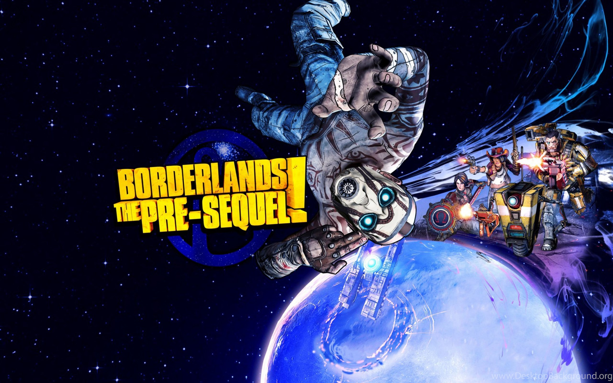

Borderlands:The Pre-Sequel

Сюжет
Действие игры происходит между событиями Borderlands и Borderlands 2. Сюжет Borderlands: The Pre-Sequel разворачивается на луне Пандоры — Элписе (англ. Elpis) — и рассказывает нам историю становления корпорации «Гиперион» и его главы — Красавчика Джека, который тогда был ещё простым программистом по имени Джон, мечтавшим разыскать некий ценный артефакт.
Игровой процесс
Движок в Borderlands: The Pre-Sequel остался таким же, как и в Borderlands 2 - немного переработанный Unreal Engine 3. В игре реализованы множества совершенно новых механик и особенностей. Так как действие игры происходит на спутнике Пандоры, имеющем достаточно слабую гравитацию для поддержания достаточного для дыхания уровня кислорода, задача пополнения кислорода станет новой проблемой игроков. При перемещении между локациями где не будет кислорода, его можно пополнять несколькими способами. На локациях располагаются маленькие скважины источающие кислород (Air geysers) и мини-станции с собственными антигравитационными полями и генераторами кислорода (Oxygen generator), а также они открывают ближайшую карту местности на радаре. Поверженные противники теперь оставляют после себя ёмкости с кислородом. Уровень кислорода напрямую связан с персональным реактивным ранцем (O2 kit) у каждого из персонажей, что позволит в условиях сниженной гравитации использовать его в качестве альтернативного способа передвижения и ведения боя, а также появятся разнообразные модификаторы для них (O2 mods), которые заменяют ячейку реликвии. Например, можно совершать затяжные прыжки, расходуя при этом запас кислорода, что позволит быстрее передвигаться по локациям, или же высоко подпрыгнуть вверх, а затем резко опуститься вниз на врага, оглушая его и причиняя ему повреждения.
Среди главных изменений игрового процесса, появление нового типа оружия и вида стихийного повреждения. В игре появился полноценный класс Лазерного оружия (Laser weapons), а не его остатки в виде E-Tech модификаций оружия в Borderlands 2. Так же появился новый производитель оружия - SCAV, который является прототипом фирмы Бандит. В свою очередь, класс лазерного оружия поделен на лучевое (Beam laser) и импульсное(?) (Bolt laser), которое выпускается разными производителями. Новым видом стихийного повреждения стал Крион (Cryo), вид элементального повреждения обладающего замораживающим воздействием, способный не только замедлить, но и даже полностью заморозить противника.
Разработчики заверяют в том, что игроки могут посетить «Лунную базу снабжения» корпорации «Гиперион» которая висит над головой у игроков на протяжении всей Borderlands 2. Игровой мир Borderlands: The Pre-Sequel меньше второй части, но больше первой.
В игре появилось два новых вида техники - парящий одноместный квадроцикл Stingray и двухместная багги Moon Buggy.
Появилась и новая валюта, небольшие синие кристаллы - Moonstone. Она используется для улучшения снаряжения и покупок на Чёрном рынке (Black Market).